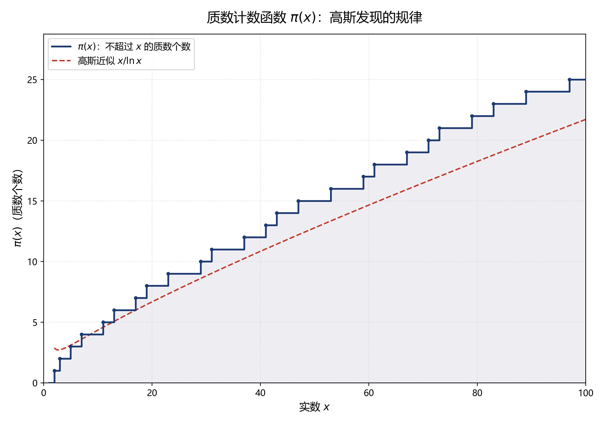
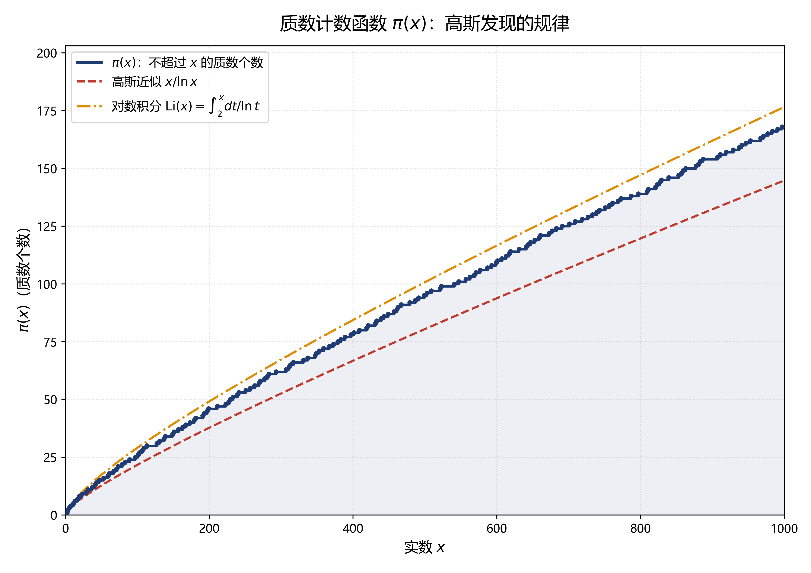
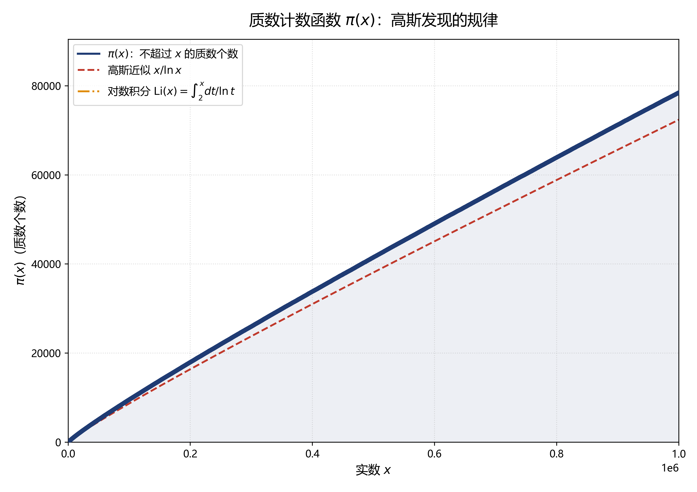
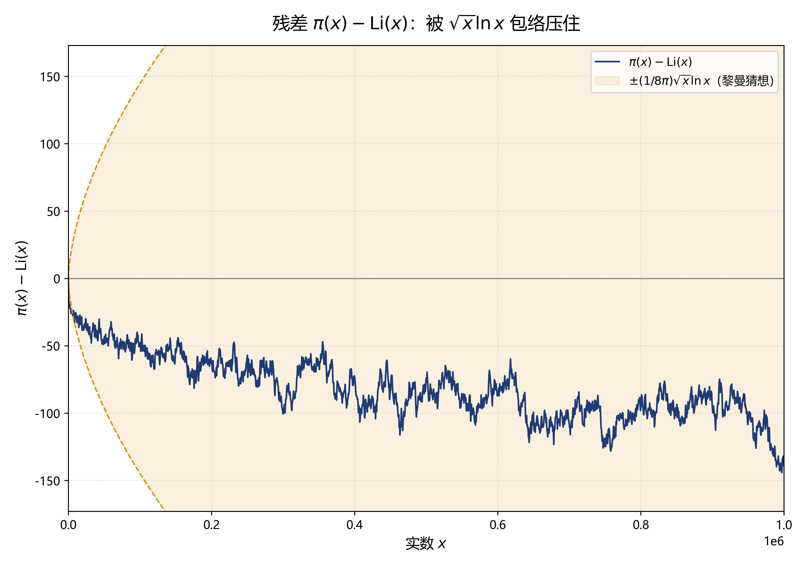
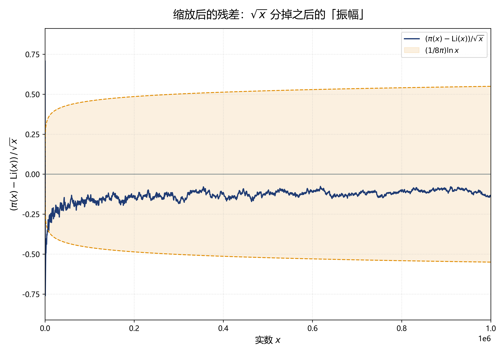
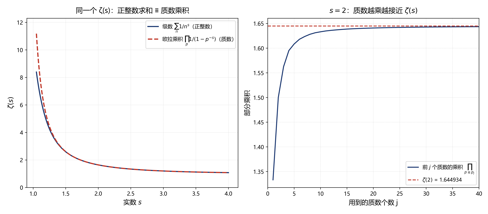
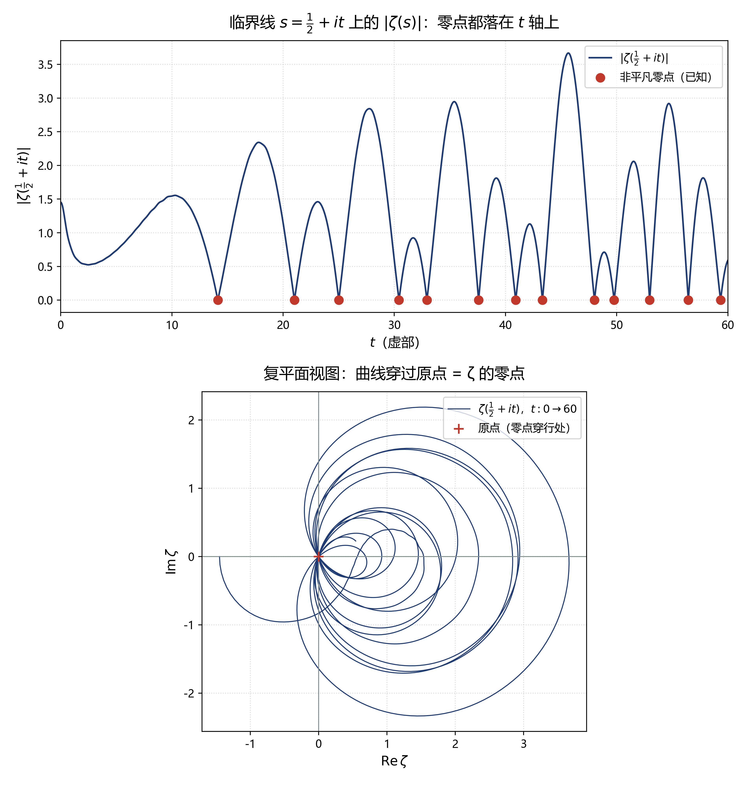
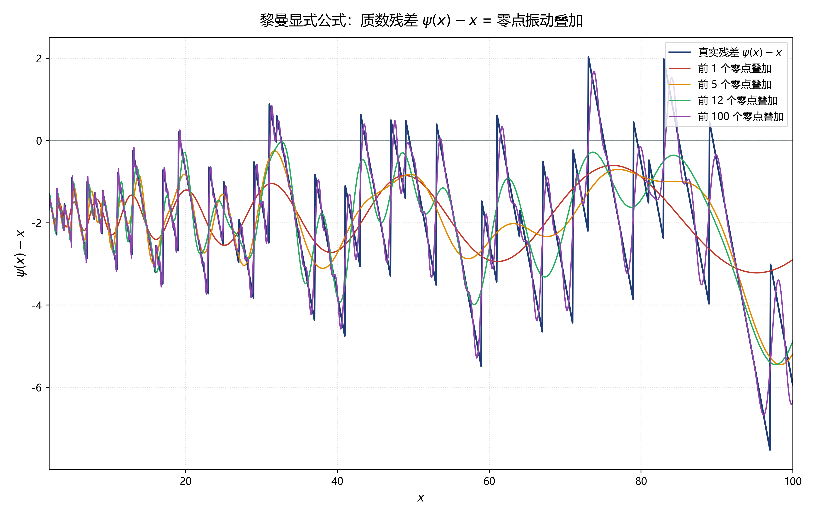

RIEMANN HYPOTHESIS · 可视化讲解
质数是自然数里的原子，却出现得毫无规律。一百七十多年前，黎曼把「数质数」这件事翻译成一个 复变函数的零点位置问题，从此奠定了现代数论的地基——而他留下的那个猜测，至今无人证明。 本页用一条五步可视化主线，从 π(x) 一路走到黎曼显式公式。
这份讲解的结论可以先放在这里：质数分布的「误差」并不是随机的噪声，它可以被精确地写成 「一个主项 + 无穷多个零点振动」之和。换句话说，数质数数得准不准，取决于一个复变函数的零点 排在哪里。
一句话结论：质数分布的残差可以精确写成「主项 + 无穷多个零点振动」之和；
而所有非平凡零点都压在 Re(s) = 1/2 这条线上——这正是残差被 √x
量级控制住的原因，也是黎曼猜想的份量所在。
接下来的五个步骤，就是这条结论的现代版推导：先学怎么数质数，再看数不准的误差有多大， 接着把质数和 ζ 函数连起来，最后让零点出场。
黎曼猜想不是灵光一现的产物，而是三代人接力搭起来的：欧拉把质数与一个无穷级数绑在一起， 高斯猜出了质数分布的整体规律，黎曼则把这个函数搬进复平面，一眼看出了隐藏的秩序。 把这三个人分清楚，整条主线的设计也就顺理成章了。
1735 年他解决了巴塞尔问题，算出 1/1² + 1/2² + 1/3² + … = π²/6；
1737 年他又发现，这个级数可以整体改写成「对所有质数求积」的形式，即欧拉乘积。
这是历史上第一次把「质数」与「函数」划上等号，还顺带给出了「质数有无穷多个」的一个全新证明。
大约十五岁时，高斯通过计算质数表发现：不超过 x 的质数个数 π(x)，大致等于
对数积分 Li(x) = ∫₂ˣ dt / ln t。他没有把这条观察写成论文，
直到 1863 年遗稿整理时才公之于众。而高斯本人，正是黎曼在哥廷根的老师。
1859 年，刚当选柏林科学院院士的黎曼提交了他唯一一篇数论论文《论小于给定数值的质数个数》，
全文只有 8 页。他把 ζ 解析延拓到整个复平面、写出函数方程、给出用零点重构质数分布的显式公式，
并在末尾写下那个猜测：所有非平凡零点的实部都是 1/2。他 39 岁死于肺结核。
常见误记。ζ 函数是欧拉的（1737 年欧拉乘积），不是高斯；
高斯贡献的是近似公式 π(x) ~ x / ln x；
真正把 ζ 解析延拓到复平面、并把它与质数误差挂上钩的，才是黎曼。
下面是这条主线上的关键节点，从欧拉乘积一直排到今天的数值验证。
欧拉证明 ζ(s) = Σ 1/n^s = ∏ (1 − p^−s)^−1，质数第一次被写进函数的语言里。
约十五岁的高斯推测 π(x) ≈ Li(x)；这条猜想直到 1863 年才被他身后的遗稿公开。
切比雪夫证明了 Bertrand 公设，并说明 π(x) 与 x / ln x 始终处在同一个数量级——但还差常数是否为 1。
解析延拓、函数方程、显式公式，以及「非平凡零点实部为 1/2」的猜测，全部浓缩在一篇短文中。
阿达马与德拉瓦莱普桑各自独立证明 π(x) ~ Li(x)；关键一步是证明 ζ 在直线 Re(s) = 1 上没有零点。
希尔伯特在世纪之交的演讲中，把黎曼猜想连同素数定理等一起列为第八问题。
Gram 用手算验证了前 15 个零点；Turing 在 1953 年给出可机器执行的严格校验方法，让「验证零点」变成可规模化的计算。
哈代证明了临界线上存在无穷多个非平凡零点——这是第一次证明「临界线上的零点确实不少」。
蒙哥马利与戴森发现：零点的间距统计与随机厄米矩阵特征值的分布（GUE）一致，暗示零点或许来自某个量子力学算子（希尔伯特–波利亚猜想）。
克雷数学研究所把黎曼猜想列为七个千禧年难题之一，悬赏一百万美元。
2004 年，前 10¹³ 个非平凡零点被逐一验证落在临界线上；2021 年，Platt 与 Trudgian 把「确认无零点」的范围推进到高度 3 × 10¹²。
为什么它这么难？黎曼在那篇论文里提出了不止一个猜测，后来大部分都被陆续证明了， 唯独「零点是否都排在临界线上」这一条至今悬而未决。它不是孤立的一道题：数论里成百上千条命题 都是「假定黎曼猜想成立」才被证明的。
五步之间不是并列关系，而是一条有明确因果链的推导路径。
flowchart LR A["第 1 步
π(x)：怎么数质数"] --> B["第 2 步
π(x) − Li(x)：残差有多大"] B --> C["第 3 步
欧拉乘积：质数与整数"] C --> D["第 4 步
ζ 函数：临界线与零点"] D --> E["第 5 步
黎曼显式公式：残差 = 零点振动之和"] D -. 零点位置决定振动频率 .-> E
主线一句话 数质数 → 看误差 → 找到生成函数 → 定位零点 → 用零点精确重构误差。
与其逐个判断「这个数是不是质数」，更有价值的问题是问总量：不超过 x 的质数一共有多少个，
记作 π(x)。它是一个只会在质数处往上跳一级的阶梯函数。脚本用埃氏筛生成质数表，
再累加出这条阶梯。
有两条光滑曲线试图逼近这条阶梯：高斯近似 x / ln x，以及对数积分
Li(x) = ∫₂ˣ dt / ln t。两者都给出了正确的「密度趋势」，但 Li(x)
明显更贴近阶梯——这也是后面所有讨论都以它作为基准的原因。

x ≤ 100 阶梯是 π(x)，虚线为高斯近似与 Li(x)。

x ≤ 1000 π(1000) = 168，阶梯与包络的差距很小。

x ≤ 10⁶ π(10⁶) = 78498，Li(10⁶) ≈ 78637.4。
图：质数计数函数与两条光滑近似（脚本 step1_prime_counting.py，dpi = 400）。
既然 Li(x) 这么准，那把两者相减会得到什么？答案是：残差不趋于零，
而是一直在 0 附近来回振荡。真正被控制住的不是残差本身，而是它的量级。
这一步引入 von Koch 定理作为标尺：若黎曼猜想成立，则对足够大的 x 有
|π(x) − Li(x)| ≤ (1 / 8π) · √x · ln x (x ≥ 2657)
也就是说，残差最多以 √x · ln x 的速度增长，而 Li(x) 本身以
x / ln x 的速度增长——两者相除，相对误差趋于零。这张「包络」正是黎曼猜想
在质数计数上的直接推论。

残差 π(x) − Li(x) 红色包络为 ±(1/8π)·√x·ln x，残差始终被压在它内部。

缩放后的残差 (π(x) − Li(x)) / √x 用 √x 分掉增长趋势后，剩下的是稳定振荡的振幅，包络相应变为 (1/8π)·ln x。
质数凭什么能被一个函数「编码」？靠的就是上一节提到的那条 1737 年的公式：把左边对所有正整数求和， 右边对所有质数求积，两边完全相等。左边只用到加法，右边只用到乘法与质数， 这条等式就是「质数的信息藏在 ζ 里」的入口。
ζ(s) = Σ_{n≥1} 1 / n^s = ∏_{p 为质数} 1 / (1 − p^−s)
脚本用「部分乘积」与「级数部分和」做对照：取的质数越多，右侧的乘积就越逼近左侧的和，
两者收敛到同一个 ζ(s)。下面取 s = 2 演示这一收敛过程
（其极限正是欧拉解决的巴塞尔问题：π²/6 ≈ 1.6449）。

部分乘积 vs 级数部分和 随参与质数增多，欧拉乘积逐级逼近 ζ(s)，与级数求和收敛到同一值。
上面的级数只有在 Re(s) > 1 时才收敛，可我们要讨论零点的位置，就必须让 ζ
在整个复平面上都有定义——这正是黎曼 1859 年做的第一件事。脚本按实部自动路由到三种表示，完成解析延拓：
Σ 1/n^s（绝对收敛）。ζ(s) = η(s) / (1 − 2^(1−s))，其中 η 是交替级数。ζ(s) = 2^s · π^(s−1) · sin(πs/2) · Γ(1−s) · ζ(1−s)。
延拓之后，零点分成两类：s = −2, −4, −6, … 这些是平凡零点；
其余全部落在 0 ≤ Re(s) ≤ 1 的临界带里，称为非平凡零点，
第一个位于 s = 1/2 + 14.1347i 附近。下图沿临界线 Re(s) = 1/2
扫描 |ζ(1/2 + it)|，每一次曲线触到零轴，就是一个非平凡零点。

临界线上的 |ζ(1/2 + it)| 上图为模值随 t 的曲线，下图把同一段曲线画在复平面上，穿过原点处即为零点。
只看一条线还不够直观。把 |ζ(s)| 铺成三维曲面，可以一眼看到极点在
s = 1 处竖起一根尖峰，而零点则表现为曲面「触底」的点。为了让左半平面的
指数级增长与零点附近的细节出现在同一张图里，纵轴改用对数高度 log10(1 + |ζ(s)|)：
零点处高度恰为 0，起伏细节保持可见。
下面的三维曲面直接内嵌在本页中：曲面按 rainbow 色表着色，实部 −4 ~ 6、虚部 0 ~ 100
（覆盖更多非平凡零点），临界面 Re(s) = 1/2 用透明红色网格标出，
并对每个非平凡零点画了指向它的箭头。拖拽旋转、滚轮缩放。
图：log10(1 + |ζ(s)|) 交互式曲面（rainbow 配色），由 step4_zeta_critical_line.py --html 导出。
为什么曲面左半边像「一堵墙」？
由函数方程可推出，当 Re(s) = σ → −∞ 时
|ζ(s)| ~ |τ|^(1/2) · (2π / |τ|)^σ（τ 为虚部）。关键阈值是 2π ≈ 6.28：
当 |Im(s)| > 2π 时，越往左 |ζ| 越大；而 |Im(s)| < 2π 时越往左越接近 0。
数值上：ζ(−4 + 5i) ≈ 0.57、ζ(−4 + 20i) ≈ 191、ζ(−4 + 40i) ≈ 4091。
这正是对数纵轴存在的理由。
最后一步，把前面所有线索缝在一起。为了得到更干净的等式，这里改用切比雪夫第二函数
ψ(x) = Σ_{p^k ≤ x} ln p（对质数及其幂次加权求和）。黎曼显式公式给出的是一段
精确的恒等式，而不是近似：
ψ(x) = x − Σ_ρ x^ρ / ρ − ln(2π) − ½ · ln(1 − x^−2)
其中求和 Σ_ρ 遍历 ζ 的所有非平凡零点 ρ = 1/2 + iγ。
主项 x 给出整体趋势，后面的零点项则贡献出一层层振动——质数分布的「抖动」
就是这些振动的叠加。由于零点成共轭对出现，每一对可以合并成一个实振动：
x^ρ / ρ + x^ρ̄ / ρ̄ = 2√x · [ (1/2)·cos(γ ln x) + γ·sin(γ ln x) ] / (1/4 + γ²)
于是「残差 = 主项 + 无穷多个零点振动」不再是一个比喻，而是一个可以逐项累加的公式： 零点加得越多，重构出的阶梯就越贴合真实数据。下图用前 1 / 5 / 12 / 100 个零点做叠加， 可以清楚看到叠加项越多、曲线越贴近真实残差。

残差 ψ(x) − x 的零点展开 深蓝为真实残差，其余曲线为前 1 / 5 / 12 / 100 个零点的叠加结果。
下面把综合图做成可交互版本：拖动滑动条改变参与叠加的零点个数 N（1 ~ 100），
上图为真实 ψ(x)/ln x 阶梯与前 N 个零点重构的对比，下图为真实残差
ψ(x)−x 与前 N 个零点振动叠加的对比。N 越大，重构曲线越贴合真实数据。
图：ψ(x)/ln x 与残差 ψ(x)−x 的零点展开（可交互，滑动条调节叠加项数 N），由 step5_riemann_explicit_formula.py --html 导出。
每个脚本都带一组数值校核，用来确认实现没有写错。下表是全部通过的结果， 也是判断「公式确实能被算出来」的直接证据。
| 检查项 | 计算结果 | 说明 |
|---|---|---|
| π(100) | 25 | 质数计数基准值 |
| π(1000) | 168 | 质数计数基准值 |
| π(10⁶) | 78498 | 质数计数基准值 |
| Li(10⁶) | 78637.4 | 对数积分近似，高于真实 π(10⁶) |
| ζ(0) | −0.5 | 函数方程延拓结果 |
| ζ(−1) | −0.083308 | 左半平面取负值 |
| ζ(−2) / ζ(−4) | ≈ 0 | 平凡零点 |
| ζ(3) | 1.20206 | Apéry 常数，级数收敛验证 |
| ζ(1/2 + 14.1347i) | ≈ 0.00149 | 第一个非平凡零点附近 |
| ψ(10) | 7.832 | 切比雪夫第二函数 |
| ψ(100) | 94.045 | 切比雪夫第二函数 |
| 前 100 零点叠加 ψ(x) − x @ x = 100 | ≈ −6.33 | 真实残差为 −5.955，有限项下仍在振荡逼近 |
| 前 100 零点重构 ψ(x)/ln x @ x = 100 | 20.340 | 真实值 20.422 |
数值来自各 step 脚本内置的自检输出。
mpmath.zetazero
离线生成后硬编码（实部均取 1/2），运行时不依赖 mpmath 求值，因此运行更快也更容易复现。
本页所有图与数值都来自下面五个脚本，均位于本页上一级目录。